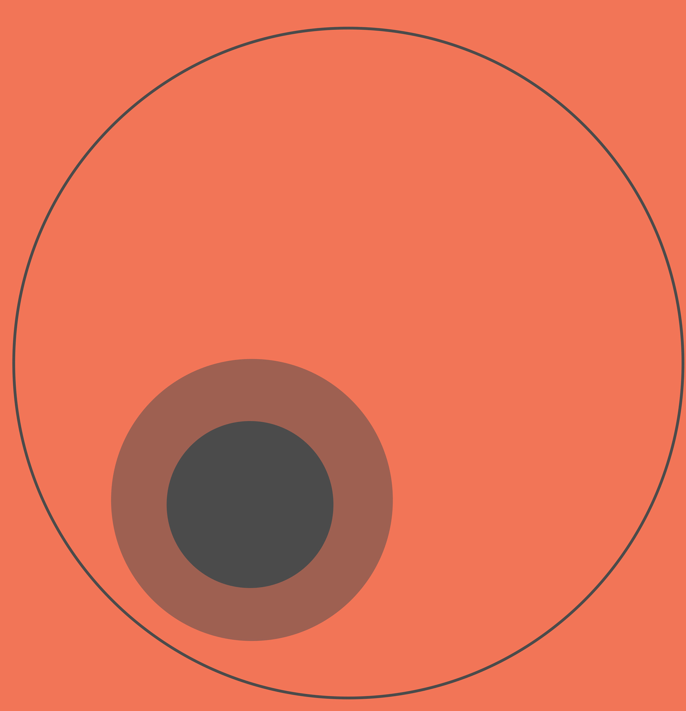

Projects

SIGHT
As full sighted people, we often take for the advantage the ease that sight brings to our lives, from enjoying the view outside our bedroom window, knowing what breed of dog is in front of us to sensing social cues through body language such as smiling or frowning. However, for blind people they have no such advantages, they cannot preserve the world around them via sight. That is my mobile application Sight comes in. It will allow a user to navigate their environment helping them find, objects they are looking for without assistance from another person, helping them identify close family and friends and even read.

Pier Through the Years
As full sighted people, we often take for the advantage the ease that sight brings to our lives, from enjoying the view outside our bedroom window, knowing what breed of dog is in front of us to sensing social cues through body language such as smiling or frowning. However, for blind people they have no such advantages, they cannot preserve the world around them via sight. That is my mobile application Sight comes in. It will allow a user to navigate their environment helping them find, objects they are looking for without assistance from another person, helping them identify close family and friends and even read.
Love Love Films
As full sighted people, we often take for the advantage the ease that sight brings to our lives, from enjoying the view outside our bedroom window, knowing what breed of dog is in front of us to sensing social cues through body language such as smiling or frowning. However, for blind people they have no such advantages, they cannot preserve the world around them via sight. That is my mobile application Sight comes in. It will allow a user to navigate their environment helping them find, objects they are looking for without assistance from another person, helping them identify close family and friends and even read.

Lunacy
As full sighted people, we often take for the advantage the ease that sight brings to our lives, from enjoying the view outside our bedroom window, knowing what breed of dog is in front of us to sensing social cues through body language such as smiling or frowning. However, for blind people they have no such advantages, they cannot preserve the world around them via sight. That is my mobile application Sight comes in. It will allow a user to navigate their environment helping them find, objects they are looking for without assistance from another person, helping them identify close family and friends and even read.
Work
Cinolla
Front End developer
lorem lorem lorem
Redweb
Stuent Front End developer
lorem lorem lorem